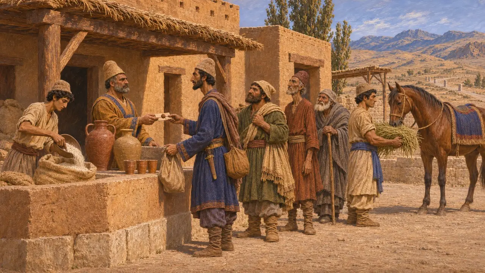
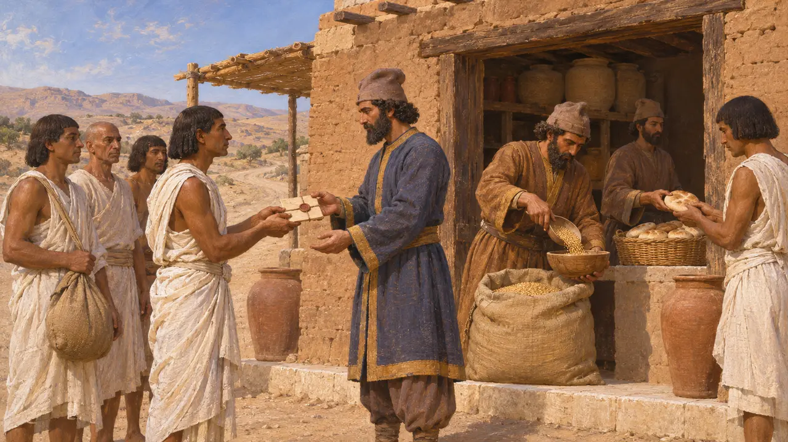
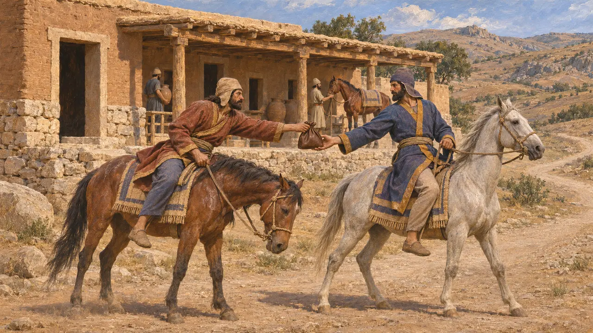
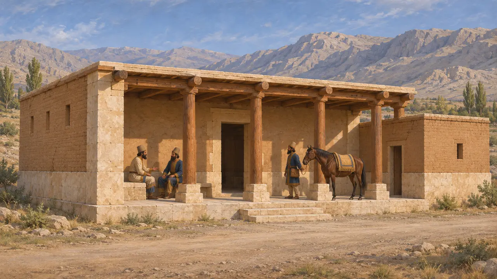
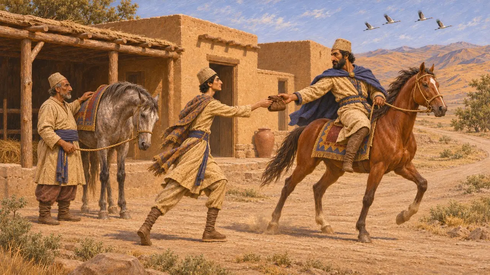

驿站是设在波斯帝国主要道路沿线的站点，为奉国王之命出行的人提供食物、草料和替换的牲口。借助驿站，信件、官员和劳役队伍得以快速穿越帝国，各行省也由此与苏萨和波斯波利斯的宫廷紧密相连。
游戏中： 仅在苏萨关卡中可建。配有人员的驿站能加快特许状商队的行进，其骑手还能发现劫掠者。历史上，驿站为持有盖印通行凭证的官方旅人供应给养；为商人商队服务是游戏的简化处理。

泥板中所记的旅人口粮
见于史载波斯波利斯城防泥板以埃兰语写成，约成于公元前509年至前493年，记录了发放给途中之人的面粉、啤酒、葡萄酒和草料。旅人携带一份名为halmi的加印文书，写明是谁批准了此次行程。领取者包括快马信使（pirradaziš）、官员，以及往来于波西斯、苏萨、坎大哈、印度和萨第斯之间的劳工队伍。
R. T. Hallock, Persepolis Fortification Tablets, 1969

埃及总督签发的一份较晚的通行证
见于史载公元前5世纪晚期的埃及总督阿尔沙马留下一封阿拉米语书信，命令沿途一系列地点的官员，在其管家奈赫提霍尔及随从前往埃及途中，按定额发放每日口粮。这表明在大流士身后很久，同一制度仍在运转。显贵发出加盖印章的命令，沿途的仓储便予以兑现。
Arshama letter (TADAE A6.9)

希罗多德论御道及其信使
古代记述希罗多德描述了从萨第斯到苏萨的道路，全程设有王家驿站和上好的客舍，共计111座驿站，步行约需3个月。他在别处还描述了骑马信使的接力制度：每一日的路程都备有替换的骑手和马匹，信件由一名骑手传给下一名，一路不停。
Herodotus 5.52-54; Herodotus 8.98

在实地寻找驿站
争夺中能够确切认定的驿站寥寥无几。法尔斯的卡莱卡利有一座阿契美尼德时期的柱厅建筑，有人认为它是苏萨至波斯波利斯道路上的一处驿站，但其用途至今仍有争议。史家也在争论：这一网络有多少是大流士新建的，又有多少是他对亚述和米底旧有道路的重整。
P. Briant, From Cyrus to Alexander, 2002; D. Graf, The Persian Royal Road System, 1994

疾逾飞鹤
后世传说色诺芬将驿传接力的发明归于居鲁士大帝，称他先测试了一匹马一日能跑多远。他记述有人声称信使比鹤飞得还快，但他本人对此存疑。他的《居鲁士的教育》是一幅理想君主的道德画像，而这一制度最早的确凿证据来自大流士在位时期的泥板。
Xenophon, Cyropaedia 8.6.17-18
来源
- R. T. Hallock, Persepolis Fortification Tablets, 1969
- Herodotus 5.52-54; 8.98
- P. Briant, From Cyrus to Alexander, 2002
- D. Graf, The Persian Royal Road System, 1994
- Arshama letter (TADAE A6.9)
- Xenophon, Cyropaedia 8.6.17-18